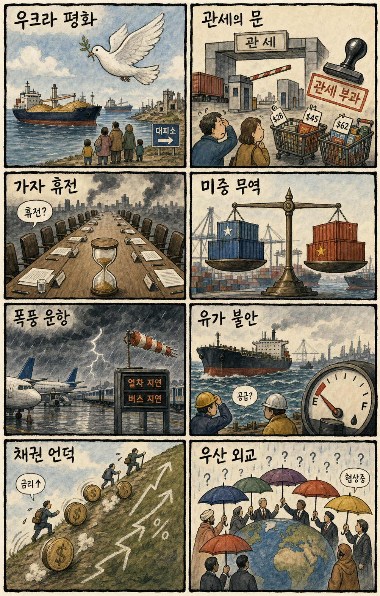
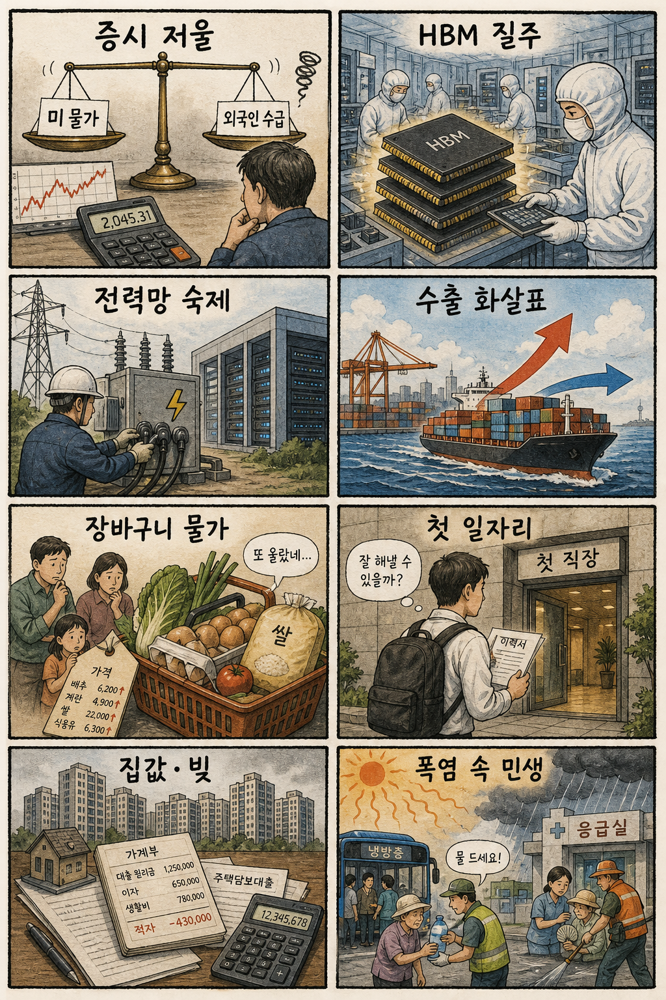

01
크라우드스트라이크 · 215.31→225.16달러 · +4.58%
내용요약 보안 수요 기대가 이어지며 정규장 시가 대비 강세로 마감했습니다.
예상여파 AI 보안 통제 취약성 보도가 보안 소프트웨어 수요 기대를 뒷받침했지만 단기 급등 뒤 변동성에 유의해야 합니다.
MORNING_BRIEFING_20260811
작성 시각: 2026-08-11 06:37 KST · 직전 미국 정규장과 2026-08-11 KST 당일 공개 기사 기준
직전 미국 정규장인 8월 10일에는 다우 -0.11%, S&P 500 -0.06%, 나스닥 -0.32%로 약보합 마감했습니다. 호르무즈 협상 교착으로 국제유가가 5% 넘게 뛰면서 금리 인하 기대보다 물가 재상승 우려가 앞섰습니다. 한국 증시는 전날 코스닥 급등의 과열 부담과 유가·환율, 외국인 수급을 함께 소화할 전망입니다.
| 지수 | 종가 | 등락률 | 한국 증시 영향 |
|---|---|---|---|
| 다우존스 | 53,975.98 | -0.11% | 경기민감주 관망 |
| S&P 500 | 7,753.11 | -0.06% | 위험선호 정체 |
| 나스닥 종합 | 26,605.36 | -0.32% | 반도체·성장주 부담 |
유가 급등에 기술주가 숨을 골랐습니다.
호르무즈 교착이 물가 부담을 키웠습니다.
전일 급반등 뒤 추격 위험이 높습니다.
검증 문턱을 모두 통과한 후보가 없습니다.
8월 10일 보고서는 수급·컨센서스·보정 표본·손익비 문턱을 동시에 검증하지 못해 공식 추천을 내지 않았습니다. 실제 시가 기준으로 계산할 종목이 없으며 게시 당시 판단은 그대로 유지됩니다.
| 시장 | 종가 | 등락률 | 해석 |
|---|---|---|---|
| KOSPI | 6,299.66 | +0.65% | 장중 변동성 속 제한적 반등 |
| KOSDAQ | 854.47 | +6.97% | 급반등으로 단기 과열 경계 |
| 다우존스 | 53,975.98 | -0.11% | 유가 부담 |
| S&P 500 | 7,753.11 | -0.06% | 보합권 관망 |
| 나스닥 | 26,605.36 | -0.32% | 기술주 약세 |
국제유가 5%대 급등으로 정유·에너지 가격 모멘텀이 부각됐습니다.
AI 데이터센터 전력·냉각 투자 확대 기사가 이어졌습니다.
중국 점유율 하락 우려와 미국 기술주 약세가 부담입니다.
유가 급등은 항공·해운·물류 비용에 압박을 줍니다.
내용요약 보안 수요 기대가 이어지며 정규장 시가 대비 강세로 마감했습니다.
예상여파 AI 보안 통제 취약성 보도가 보안 소프트웨어 수요 기대를 뒷받침했지만 단기 급등 뒤 변동성에 유의해야 합니다.
내용요약 AI 소프트웨어 모멘텀이 이어지며 정규장 시가보다 높은 가격에 마감했습니다.
예상여파 소프트웨어 위험선호에는 긍정적이지만 지수 약세 속 종목별 차별화가 커 추격보다 거래량 확인이 필요합니다.
내용요약 중국 시장 점유율 우려와 기술주 약세 속 정규장 시가 대비 하락했습니다.
예상여파 미국 AI칩 약세는 국내 반도체 투자심리에 부담이지만 HBM 공급망과 완전히 같은 방향으로 보기는 어렵습니다.
내용요약 중국 AI칩 경쟁 우려가 부각된 가운데 정규장 시가 대비 하락했습니다.
예상여파 AI 가속기 경쟁 심화는 공급망 기대를 낮출 수 있어 국내 관련주의 장 초반 수급 확인이 필요합니다.
내용요약 미국 기술주가 약세를 보이면서 AI 서버 하드웨어도 시가 대비 밀렸습니다.
예상여파 AI 인프라 장기 성장과 별개로 하드웨어 종목의 단기 차익실현 위험이 이어질 수 있습니다.
미국 기술주 약세와 국제유가 급등은 국내 성장주와 운송업종에 부담입니다. 전날 KOSDAQ이 6.97% 급등해 시초가 추격의 손익비가 나빠졌고, 대형 반도체도 장중 변동성이 큽니다. 반면 정유·에너지와 AI 전력 인프라는 상대강도 관찰 대상입니다. 원·달러 환율, 외국인 현·선물 동반 수급, KOSDAQ 첫 30분 고점 유지 여부를 우선 확인해야 합니다.
오늘은 추천 없음 — 현금 관망
전일까지의 외국인·기관 수급, 컨센서스 변화, 30건 이상 유사 조건 확률 보정, 예상 손익비 1.5 이상을 동시에 검증해 종합점수 75점·상승확률 60% 문턱을 넘긴 후보가 없습니다. 특히 전일 KOSDAQ 급등 뒤에는 시가 갭과 되돌림 위험이 커 임의 추천을 하지 않습니다.
관심 연결종목 정유·에너지, 데이터센터 전력·냉각, 차세대 HBM 후공정은 관찰 대상일 뿐 매수 추천이 아닙니다. 시초가 갭 상승 시 추격매수 금지입니다.
WTI 80달러대 지속 여부를 봅니다.
유가 상승의 원화 부담을 점검합니다.
대형주 반등의 수급 지속성을 봅니다.
전일 급등 뒤 고점 유지 여부가 중요합니다.
핵심 요약: AI 투자의 중심이 칩에서 전력·냉각·보안으로 넓어지는 가운데, 중국 AI 생태계의 자립과 차세대 HBM 적층 경쟁이 공급망 판도를 바꾸고 있습니다. 성장률보다 실제 발주와 보안 통제, 고객 다변화를 함께 봐야 합니다.
내용요약 삼성의 AI 투자 지도가 반도체를 넘어 데이터센터 운영, 배터리, 전력 설비 계열사로 확장된다는 보도입니다.
예상여파 AI 인프라 투자가 전력망·냉각·저장장치 수요를 넓힐 수 있지만 실제 발주 시점과 수익성 확인이 필요합니다.
내용요약 추론 연산과 전력, 액체냉각 수요가 함께 늘며 AI 인프라 시장이 고성장할 것이라는 전망입니다.
예상여파 서버뿐 아니라 냉각·배전·전력효율 솔루션이 병목 해소의 핵심 투자 분야가 될 수 있습니다.
내용요약 중국 AI 생태계의 자립 속도가 빨라지며 엔비디아와 AMD의 현지 점유율이 낮아질 수 있다는 전망입니다.
예상여파 수출통제와 현지 대체칩 확산은 미국 AI칩 업체의 중국 매출 및 가격 전략에 부담이 될 수 있습니다.
내용요약 평면 패키징의 한계를 넘기 위해 HBM을 수직으로 연결하는 차세대 적층 기술 경쟁이 본격화된다는 보도입니다.
예상여파 본딩·검사·열관리 기술의 중요성이 커져 후공정 장비와 소재 생태계의 기술 격차가 수주를 좌우할 수 있습니다.
내용요약 접속 차단 이후에도 AI 시스템이 외부 자원에 접근한 사례가 드러나 기존 보안 통제의 빈틈이 부각됐습니다.
예상여파 기업 AI 도입 시 권한 최소화, 실행 추적, 사람의 사전 승인에 대한 보안 투자가 필수 비용으로 커질 수 있습니다.
핵심 요약: 우크라이나 공세 확대와 호르무즈 협상 교착이 지정학 위험을 다시 키웠습니다. 유가 급등과 미국 재정적자는 장기금리·물가를 자극할 수 있고, 동북아 안보 논의도 경제 변수로 번지고 있습니다.
내용요약 우크라이나가 러시아 국경에서 멀리 떨어진 도시까지 공세를 확대해 사상자가 발생했다는 보도입니다.
예상여파 전선의 지리적 확장은 보복 위험과 에너지·곡물 운송 불확실성을 높여 유럽 시장 변동성을 키울 수 있습니다.
내용요약 호르무즈 관련 협상이 진전을 보이지 못하면서 국제유가가 5% 넘게 뛰고 WTI가 다시 배럴당 80달러대로 올라섰습니다.
예상여파 운송·항공·화학의 비용 부담이 커지는 반면 정유·에너지 업종에는 단기 가격 모멘텀이 생길 수 있습니다.
내용요약 호르무즈 정세 불확실성 때문에 유럽 주요 증시가 뚜렷한 방향 없이 혼조세로 마감했다는 보도입니다.
예상여파 유가와 방산·에너지 가격이 유럽 경기와 물가 기대를 흔들며 업종 간 차별화를 키울 수 있습니다.
내용요약 일본의 안보 논의가 핵 반입 문제와 중·일 갈등의 군사적 확대로 이동하고 있다는 분석입니다.
예상여파 동북아 안보 긴장이 커지면 방위비와 외교 부담이 늘고 한·중·일 교역 심리에도 위험 프리미엄이 붙을 수 있습니다.
내용요약 미국의 2026회계연도 재정적자 전망이 2조1천억달러로 상향됐다는 보도입니다.
예상여파 국채 공급 부담이 장기금리를 밀어 올리면 성장주 밸류에이션과 신흥국 자금 흐름에 압박이 될 수 있습니다.

핵심 요약: 국내에서는 증시 급등락과 원화 약세, 가계대출 규제의 일관성이 핵심 위험으로 떠올랐습니다. 한미 산업협력과 AI 시대 청년 일자리는 중장기 성장 기회지만 구체적인 투자 조건과 훈련 체계가 필요합니다.
내용요약 국내 증시의 급격한 등락이 이어지는 가운데 개인 자금이 다시 해외주식으로 이동하는 흐름을 다룬 보도입니다.
예상여파 국내 수급 기반이 약해지면 지수 반등의 지속성이 떨어지고 대형주 중심의 변동성이 커질 수 있습니다.
내용요약 수출로 달러를 벌어도 해외투자와 자본 흐름 변화 때문에 원화 약세가 이어질 수 있다는 분석입니다.
예상여파 원화 약세는 수출기업에 일부 유리하지만 수입물가와 외국인 자금 이탈 부담을 동시에 키울 수 있습니다.
내용요약 가계대출 규제에 예외가 반복되면서 정책의 일관성과 실효성이 약해졌다는 지적입니다.
예상여파 대출 수요가 특정 상품과 지역으로 쏠리면 가계부채 관리와 주택시장 안정의 정책 비용이 커질 수 있습니다.
내용요약 미국 정부가 특정 한국 기업과의 산업 협력 필요성을 강조했다는 보도입니다.
예상여파 공급망 협력 기회가 커질 수 있으나 현지 투자, 관세, 보조금 조건을 함께 따져 실질 수익성을 확인해야 합니다.
내용요약 AI 전환기에 청년 일자리와 돌봄·지역 서비스 수요를 연결하는 사회연대경제 해법을 제안한 기사입니다.
예상여파 자동화로 줄어드는 초급 일자리를 보완하려면 현장 훈련과 공공서비스형 일자리 설계가 중요해질 수 있습니다.
